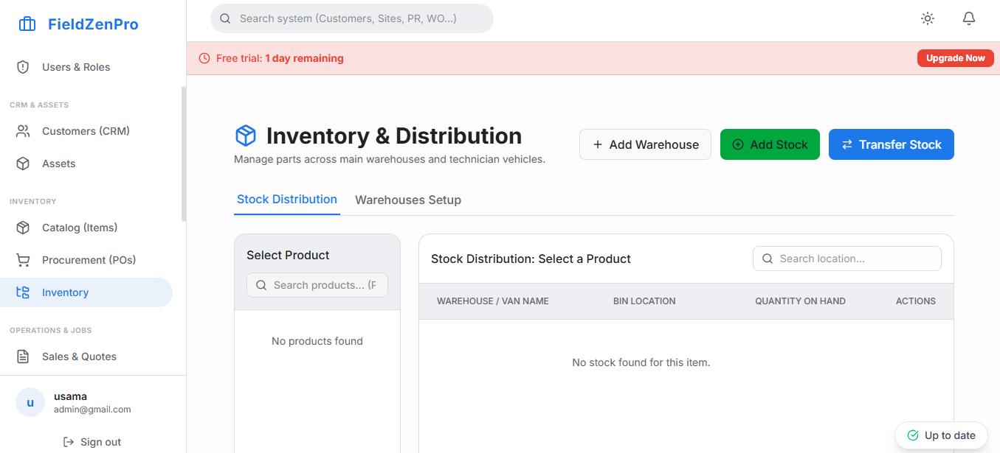

The pool service industry operates on a rhythm. Every week or two, a technician must visit the same property, balance the water chemistry, clean the filters, and ensure the equipment is functioning properly. Because the revenue per stop is relatively low, profitability hinges entirely on volume and efficiency. A technician who can effectively manage 80 pools a week is highly profitable; one who can only manage 40 is a liability.
Managing this high-volume, repetitive workload using paper routes and manual chemical logs is a recipe for disaster. Pool service software digitizes these critical workflows, ensuring that routes are dense, chemicals are tracked, and customers are automatically billed.

To be effective, software designed for the pool industry must excel in three specific areas:
Water chemistry is precise. If a technician overdoses a pool with chlorine or acid, it creates a massive liability for the business. Pool service software should include digital chemical logs directly in the mobile app. The technician enters the current readings (pH, alkalinity, free chlorine), and the app calculates the exact dosage of chemicals required to balance the water based on the specific volume of that customer's pool.
This data is stored permanently. If a customer complains about an algae bloom three weeks later, the office can pull up the exact chemical readings and dosages from the previous visits to prove the water was balanced when the technician left.
"In the pool business, chemical logs are your primary defense against liability claims. Digitizing those logs ensures accuracy, consistency, and a permanent, searchable record."
Like landscaping, pool service is a game of route density. A technician might have 15 stops in a single day. The software must automatically optimize the driving path to minimize windshield time. Furthermore, it should handle the complexities of recurring schedules—for example, automatically skipping a week for "every other week" customers without breaking the optimized driving route for the rest of the day.
The traditional method of proving service was leaving a paper door hanger. Today, customers expect digital proof. When a technician finishes a pool, the software should automatically trigger an email or text message to the customer. This digital "door hanger" includes a photo of the clean pool, a summary of the chemical readings, and notes on any actions taken (e.g., "Emptied skimmer baskets, backwashed filter"). This proactive communication builds immense trust and virtually eliminates "Did my pool guy show up today?" phone calls.
Chasing $120 monthly checks from 300 customers is a full-time administrative job. Pool service software solves this by storing customer credit cards on file. On the 1st of the month, the software automatically generates invoices for the agreed-upon monthly service rate, adds any additional charges for specialty chemicals or minor repairs completed during the month, and processes the payment instantly.
FieldZenPro provides the specific tools pool service businesses need: robust chemical tracking, high-density route optimization, and automated recurring billing. Stop fighting with paper logs and start scaling your routes profitably.
Discover how FieldZenPro streamlines pool service management. Try it free for 14 days.
Start Your 14-Day Free Trial